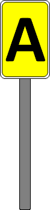

Signalbuch-Online
Signal Lf 2 - Anfangsscheibe
Ausführliche Erläuterungen, Bedeutung, Beschreibung und Richtlinien zum Signal Lf 2 der Eisenbahn-Signalordnung.
(1)
Bedeutung
Anfang der vorübergehenden Langsamfahrstelle.
(2)
Beschreibung
Eine rechteckige, auf der Schmalseite stehende oder quadratische gelbe Scheibe mit schwarzem A.

(3)
Aufstellung
Das Signal Lf 2 steht am Anfang des langsam zu befahrenden Gleisabschnitts.
(4)
Beleuchtung
Das Signal Lf 2 ist bei Dunkelheit beleuchtet oder es ist rückstrahlend.
(5)
NE
Bei den NE bestimmt der Betriebsleiter, ob das Signal Lf 2 aufzustellen ist. Er bestimmt auch, ob es zu beleuchten ist.
(6)
Richtungspfeil
Am Signal Lf 2 ist der Richtungspfeil wiederholt, wenn auch das Signal Lf 2 vor der Strecken- oder Fahrwegverzweigung steht.
Bei einem rückstrahlenden Signal Lf 2 ist auch der Richtungspfeil rückstrahlend.
Bei einem rückstrahlenden Signal Lf 2 ist auch der Richtungspfeil rückstrahlend.
(7)
Besondere Aufstellung der Signale Lf 1 und Lf 2
Innerhalb einer vorübergehenden Langsamfahrstelle ist ein weiteres Signal Lf 1 – ohne gelbe Lichter – und unmittelbar dahinter ein weiteres Signal Lf 2 aufgestellt,
a) am Halteplatz der Züge,
wenn Züge in der vorübergehenden Langsamfahrstelle planmäßig beginnen oder ihre Fahrt mit Personalwechsel fortsetzen.
b) hinter der letzten Weiche im Fahrweg,
wenn Züge von einmündenden Hauptgleisen in die vorübergehende Langsamfahrstelle einfahren und die am Hauptsignal zugelassene Geschwindigkeit geringer ist als die der Langsamfahrstelle.
Der Standort dieser zweiten Signale ist dann mit Befehl, in der La oder in einer betrieblichen Anordnung bekannt gegeben.
a) am Halteplatz der Züge,
wenn Züge in der vorübergehenden Langsamfahrstelle planmäßig beginnen oder ihre Fahrt mit Personalwechsel fortsetzen.
b) hinter der letzten Weiche im Fahrweg,
wenn Züge von einmündenden Hauptgleisen in die vorübergehende Langsamfahrstelle einfahren und die am Hauptsignal zugelassene Geschwindigkeit geringer ist als die der Langsamfahrstelle.
Der Standort dieser zweiten Signale ist dann mit Befehl, in der La oder in einer betrieblichen Anordnung bekannt gegeben.
(8)
Originalbilder
Zum Öffnen der Galerie bitte Bild anklicken!

(9)
Verweis zum Fachthema "Langsamfahrstellen"
Aufbau und Verhaltensweisen an dauerhaften und vorübergehenden Langsamfahrstellen.
→